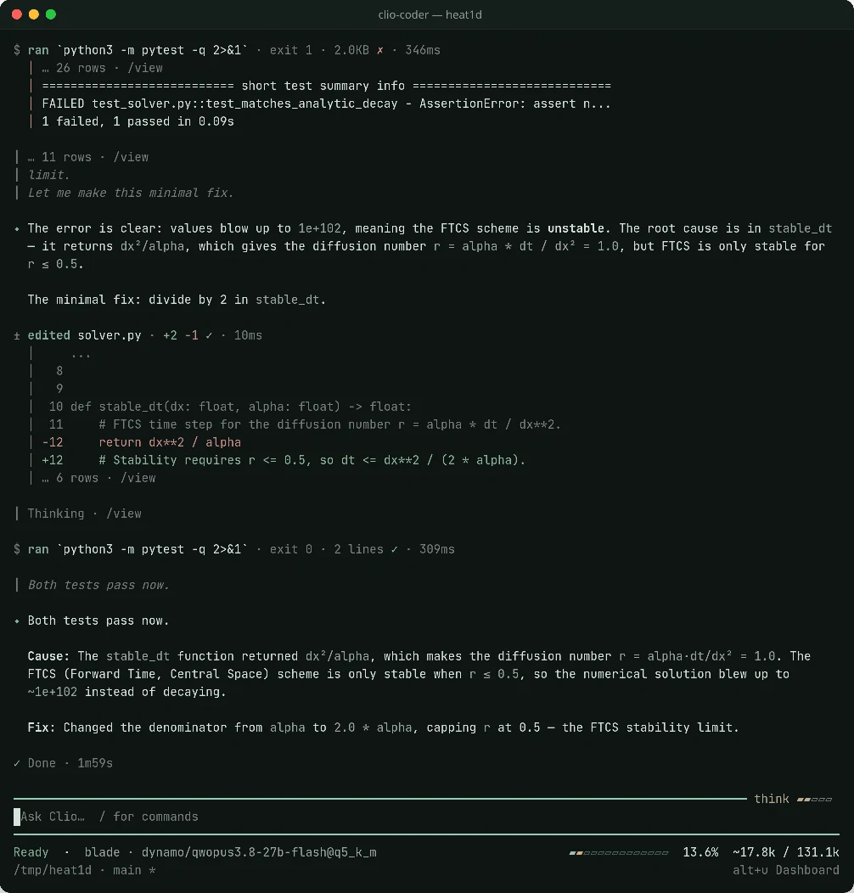

AI coding for
the code science runs on.
Build, test, and understand scientific software with an agent that runs in your terminal. Choose your model. Set the boundaries. Inspect the work.
npm install -g
@iowarp/clio-coder
Node.js ≥ 22.19 · Linux & macOS · Apache-2.0
Find why the numerical test fails.
Make a small fix and run
the existing checks.
Read the solver and its reference test.
def stable_dt(dx, alpha):
− return dx**2 / alpha
+ return dx**2 / (2.0 * alpha)Run the declared test, then inspect its output.
python3 -m pytest -qCheck to run
Changes, tool activity, and observed checks.
One agent. Your computing environment.
Built for research software
From a failing test
to a change you can check.
Simulation kernels, numerical libraries, data pipelines, and mixed-language builds. Bring the tests and reference data that define correctness in your project.
A real session. A local model.
This terminal capture shows a local 27B model tracing an unstable finite-difference time step, editing the solver, and rerunning its numerical test.
-
01
Read before changing
Inspect source, build rules, and the test that fails.
-
02
Keep the task bounded
Ask for a specific change with clear acceptance criteria.
-
03
Use your existing checks
Clio’s verification tool runs declared tests and can compare numerical results.
A passing test establishes what ran. Scientific validity still depends on your reference tests and data.
Try the numerical workflow

Your models, your machines
Run where
your work belongs.
Connect a model on your workstation, an institutional gateway, or a cloud API. Chat and workers can use different models.
Connect your first modelOn your hardware
Ollama · LM Studio · llama.cpp · vLLM
Workstation or self-hosted serverAcross your institution
Compatible gateways · Argonne ALCF
Your lab’s endpoint and credentialsWith a cloud provider
OpenAI · Anthropic · Google · OpenRouter
APIs and supported subscription sign-inMore than a conversation
Tools for the whole workflow.
Delegate a focused task
Give a worker its own model, tool limits, and budget. Combine workers into review and build-test workflows.
Keep the project in context
A project handbook, code index, and recoverable session history help you work across large codebases.
Make useful workflows repeatable
Skills encode procedures. Plugins bundle domain knowledge. Extend the agent with declared tools and MCP servers.
Inspect what happened
Runtime policy gates tool calls. Run records separate worker claims from observed checks and keep unknowns visible.
Fits your existing toolkit
Keep the agents
you already use.
Delegate tasks to installed coding agents, expose Clio to editors through the Agent Client Protocol, or reuse Clio skills in other tools. Each connector has explicit capabilities and limits.
Explore integrationsManaged workers · Portable skills · Editor connections
Before you start
A few useful answers.
Clio Coder is experimental and actively developed. The terminal is the primary interface; the optional GUI is an alpha.
Do I need a Clio account?
No. Clio runs on your machine with your own model connections. Cloud providers may require credentials and charge for inference; self-hosted models use your infrastructure.
Will it work with my local model?
Connect a supported server or compatible API endpoint. Choose a model that supports tool calling; context capacity and reasoning support depend on the model and server. Start with the connection guide.
How are commands and edits controlled?
Tool calls pass through runtime safety policy, protected-path rules, and autonomy checks. Workers have their own limits. Commands still run with your user permissions: Clio is not an operating-system sandbox. Read the safety model.
Is there a graphical application?
Yes, an opt-in GUI alpha is included with the package. It uses the same Clio runtime and currently covers a subset of terminal workflows. See the GUI setup instructions.